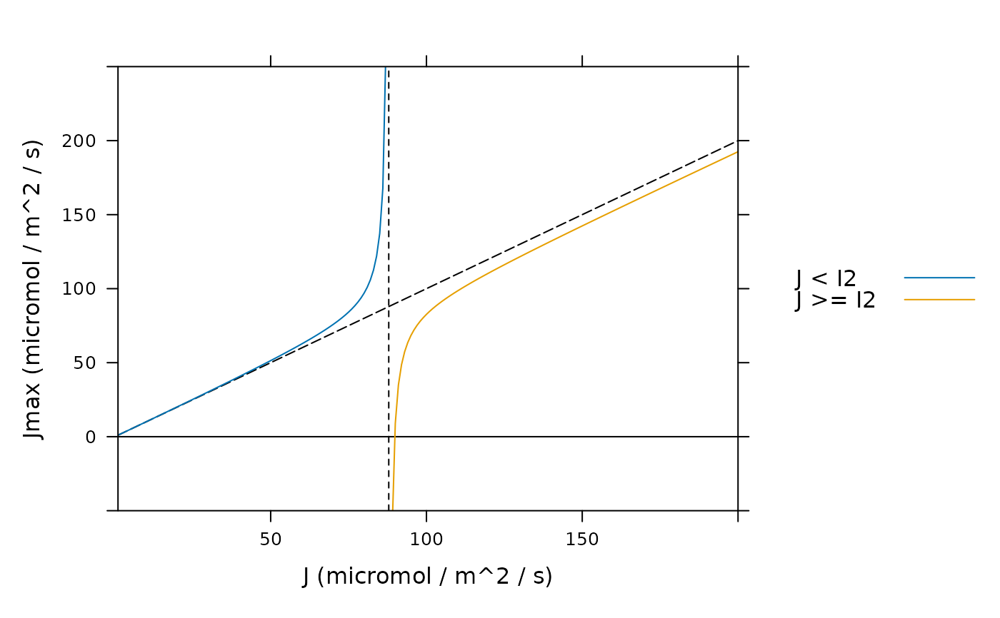

Calculate maximum electron transport rate
calculate_jmax.RdCalculates maximum electron transport rates (Jmax) from estimates of
the electron transport rate (J) at particular values of incident light
(Qin).
This function is typically used after fit_c3_aci,
fit_c3_variable_j, or fit_c4_aci is used to
estimate values of J.
Usage
calculate_jmax(
data_table,
alpha_j_at_25 = 0.293,
theta_j_at_25 = 0.979,
alpha_j_norm_column_name = 'alpha_j_norm',
qin_column_name = 'Qin_avg',
theta_j_norm_column_name = 'theta_j_norm',
tleaf_column_name = 'TleafCnd_avg',
...
)Arguments
- data_table
A table-like R object such as a data frame or an
exdf.- alpha_j_at_25
The apparent quantum efficiency of electron transport
alpha_jat 25 degrees C (dimensionless). Ifalpha_j_at_25is not a number, then there must be a column indata_tablecalledalpha_j_at_25with appropriate units. A numeric value supplied here will overwrite the values in thealpha_j_at_25column ofdata_tableif it exists.- theta_j_at_25
The empirical curvature parameter
theta_j_at_25at 25 degrees C (dimensionless). Iftheta_j_at_25is not a number, then there must be a column indata_tablecalledtheta_j_at_25with appropriate units. A numeric value supplied here will overwrite the values in thetheta_j_at_25column ofdata_tableif it exists.- alpha_j_norm_column_name
The name of the column in
data_tablethat contains the normalizedalpha_jvalues (with units ofnormalized to alpha_j at 25 degrees C).- qin_column_name
The name of the column in
data_tablethat contains values of the incident photosynthetically active flux density inmicromol m^(-2) s^(-1).- theta_j_norm_column_name
The name of the column in
data_tablethat contains the normalizedtheta_jvalues (with units ofnormalized to theta_j at 25 degrees C).- tleaf_column_name
The name of the column in
data_tablethat contains the leaf temperature in units ofdegrees C.- ...
Optional arguments; see below.
Details
Basic Requirements:
This function requires that data_table contains columns called
J_at_25 and J_tl_avg, as would be included in the output from
one of the PhotoGEA fitting functions (fit_c3_aci,
fit_c3_variable_j, and fit_c4_aci). These will be
used to calculate values of Jmax at 25 degrees C and at leaf
temperature.
If any columns for the J confidence intervals are included in
data_table (J_at_25_upper, J_at_25_lower,
J_tl_avg_upper, or J_tl_avg_lower), the corresponding confidence
intervals for Jmax will also be calculated.
If data_table is an exdf object, units will be checked
for any columns used in the calculations.
Overview of Jmax Calculations:
The potential electron transport rate going to support RuBP regeneration
(J) depends on the available light energy. J quickly increases
with the incident photosynthetically active photon flux density (Qin)
at low light levels, gradually reaching a plateau at high values of
Qin. Although other mathematical representations have been used (Walker
et al. 2021), this dependence is typically represented as a non-rectangular
hyperbola:
J = (I2 + Jmax - sqrt[(I2 + Jmax)^2 - 4 * theta_j * I2 * Jmax]) /
(2 * theta_j), (Eq. 1)
where Jmax is the maximum value of J that would be achieved at
infinitely large Qin, 0 < theta_j <= 1 is an empirical
curvature parameter, and I2 is the useful energy absorbed by
photosystem II. In turn, I2 is calculated by
I2 = alpha_j * Qin,
where alpha_j is the apparent quantum efficiency of electron transport.
alpha_j is often defined as
alpha_j = absorptance * phi_psii,max * beta_psii,
where absorptance is the leaf absorptance, phi_psii,max is the
maximum quantum yield of photosytem II, and beta_psii is the fraction
of light energy partitioned to photosystem II.
Equation 1 can be understood as a "smooth minimum" of two potential rates of
electron transport: I2 (which increases linearly with Qin) and
Jmax (which is independent of Qin). For lower light levels,
I2 is the smaller rate, and J is approximately equal to
I2; for very high light levels, Jmax is the smaller rate, and
J is approximately equal to Jmax. For intermediate values of
Qin, J smoothly transitions from I2 to Jmax.
One key property of Equation 1 is that the largest possible value of J
at a given Qin is I2, which only occurs when Jmax is much
larger than I2. In other words, the range of the function in Equation 1
is 0 <= J <= I2.
Equation 1 can be solved for Jmax, enabling calculations of Jmax
from estimates of J:
Jmax = J * (I2 - theta_j * J) / (I2 - J) (Eq. 2)
Because the range of the function in Equation 1 is 0 <= J <= I2, the
domain of its inverse function (defined in Equation 2) is also
0 <= J <= I2. In other words, Jmax can only be calculated using
Equation 2 when J < I2. Otherwise, there is no value of Jmax
that can reproduce the value of J for the given value of
alpha_j. This restriction can also be derived more rigorously; see the
Detailed algebra section below for more information.
If J >= I2, the calculate_jmax function will return NA
for the value of Jmax. This behavior can be bypassed by setting the
optional input argument ignore_restriction to TRUE, but this is
not recommended outside of pedagogical purposes. See Example 2 below for a
demonstration of what goes wrong when Equation 2 is used for J >= I2.
Note that this issue is more significant at lower light levels. For example,
assuming a typical value of alpha_j (0.293), I2 for
Qin = 1800 micromol / m^2 / s would be 527.4 micromol / m^2 / s. Values
of J are typically smaller than this, so an estimate of Jmax can
almost always be made. But if a curve were measured at Qin = 300,
I2 would only be 87.9 micromol / m^2 / s, placing a stronger
restriction on the values of J where Jmax can be estimated. Say
the best-fit value of J was 88.9 micromol / m^2 / s for a curve
measured with Qin = 300 micromol / m^2 / s; in this case, it would not
be possible to estimate Jmax, potentially indicating that the assumed
value of alpha_j was not correct.
Typical values:
According to von Caemmerer (2000), typical values of absorptance,
phi_psii,max, and beta_psii are 0.85, 1 - 0.15, and 0.5,
respectively, leading to alpha_j = 0.36125, and the curvature parameter
theta_j is typically 0.7.
Bernacchi et al. (2003) reports that phi_psii,max is 0.6895 for
light-adapted leaves at 25 degrees C, while theta_j at 25 degrees C is
0.97875. Using this value of of phi_psii,max with typical values of
absorptance and beta_psii results in an alpha_j estimate of
0.2930375. These values, rounded to three decimal places, are used as the
defaults when calculating Jmax.
It is not clear whether the temperture response defined in Bernacchi et al. (2003) is applicable to C4 leaves. For C4 leaves, it may be better to use the temperature-independent estimates from von Caemmerer (2000).
Absorbed light basis:
Values of Jmax can also be estimated from the absorbed
photosynthetically active photon flux density (Qabs). In that case, we
can regroup the terms in the definition of I2 as follows:
I2 = (Qin * absorptance) * (phi_psii,max * beta_psii) = Qabs * alpha_j_abs,
where alpha_j_abs is given by phi_psii,max * beta_psii. When
working in this basis, the default value of alpha_j at 25 degrees C
should be divided by the assumed absorptance (0.85), yielding an
alpha_j_abs value of 0.345. Along with this change, it would also be
necessary to change the name of the light column, likely to Qabs_avg.
Why PhotoGEA Uses a Separate Function for Jmax:
In principle, values of Jmax could be estimated by the fitting
functions that estimate J: fit_c3_aci,
fit_c3_variable_j, and fit_c4_aci. Instead,
PhotoGEA requires users to use a separate function (calculate_jmax) to
estimate Jmax. This serves several purposes:
It highlights that estimates of
Jmaxare made using the same equations for C3 and C4 leaves.It leaves open the possibility of other estimates of
Jmax, such as those based on a rectangular hyperbola instead of the non-rectangular hyperbola used here.It emphasizes that sometimes it is not possible to provide an estimate for
Jmax, depending on the values ofQin,alpha_j, andJ, because of the requirement thatJ < I2 = alpha_j * Qin.
The last point is especially important. If Jmax were varied during the
fitting process, and J was estimated from Jmax using Equation 1,
there would be a restriction on the possible values of J that could be
obtained: J < alpha_j * Qin. This could potentially bias the fitting
results, since it may be the case that the best fit would be found for
J outside this range.
In other words, keeping estimates of Jmax separate from the fitting
process ensures that the values of alpha_j and theta_j have no
influence on the fits or best-fit values of J. This is important since
the true values of these parameters for a particular leaf are difficult or
impossible to determine.
Detailed algebra:
Here we will solve Equation 1 for Jmax, arriving at Equation 2. This
algebra is reproduced here to highlight the important restriction that
J < I2.
First, multiply both sides of Equation 1 by 2 * theta_j:
2 * theta_j * J = I2 + Jmax - sqrt[(I2 + Jmax)^2 - 4 * theta_j * I2 * Jmax]. (Eq. 3)
Next, isolate the square root term on one side:
I2 + Jmax - 2 * theta_j * J = sqrt[(I2 + Jmax)^2 - 4 * theta_j * I2 * Jmax]. (Eq. 4)
A key point here is that the right hand side cannot be negative, since the square root of a real number is never negative. Thus, the left hand side also cannot be negative. In other words,
I2 + Jmax - 2 * theta_j * J >= 0. (Eq. 5)
We will return to this restriction later. For now, we square both sides of Equation 4:
(I2 + Jmax)^2 - 4 * theta_j * J * (I2 + Jmax) + 4 * theta_j^2 * J^2 =
(I2 + Jmax)^2 - 4 * theta_j * I2 * Jmax. (Eq. 6)
The term (I2 + Jmax)^2 appears on both sides of Equation 6 and can
therefore be cancelled out. Grouping the remaining terms that contain
Jmax on one side, we have:
4 * theta_j * Jmax * (I2 - J) = 4 * theta_j * J * (I2 - theta_j * J) (Eq. 7)
Finally, provided that I2 - J is not zero (in other words, that
I2 is not equal to J), we can divide both sides of Equation 7 by
4 * theta_j * (I2 - J) to obtain Equation 2 above.
Now, we can use this expression (Equation 2) to replace Jmax in
Equation 5:
I2 + J * (I2 - theta_j * J) / (I2 - J) - 2 * theta_j * J >= 0. (Eq. 8)
This can be converted to a single ratio as follows:
[(I2 - 2 * theta_j * J) * (I2 - J) + J * (I2 - theta_j * J)] / (I2 - J) >= 0. (Eq. 9)
Multiplying out the factors in the numerator and collecting like terms, Equation 9 becomes
[I2^2 - 2 * theta_j * I2 * J + theta_j * J^2] / (I2 - J) >= 0. (Eq. 10)
Because theta_j must lie between 0 and 1, theta_j^2 is always
less than or equal to theta_j. This allows us to place a lower bound on
the value of the numerator of the left hand side of Equation 10:
I2^2 - 2 * theta_j * I2 * J + theta_j * J^2 >=
I2^2 - 2 * theta_j * I2 * J + theta_j^2 * J^2. (Eq. 11)
The right hand side of Equation 11 can be refactored:
I2^2 - 2 * theta_j * I2 * J + theta_j * J^2 >=
(I2 - theta_j J)^2. (Eq. 12)
The right hand side of Equation 12 can never be negative, so from this we can
also conclude that the numerator of the left hand side of Equation 10 can also
never be negative. Thus, the inequality in Equation 10 is satisfied whenever
its denominator is positive. In other words, whenever I2 - J > 0, or,
equivalently, J < I2.
Thus, we have shown that Equation 2 holds whenever J < I2, since, when
this inequality is satisfied, Equation 5 is also satisfied.
Although we do not do so here, it can be shown that when I2 < J, the
value of Jmax that would be calculated by Equation 2 is the inverse of
J = (I2 + Jmax + sqrt[(I2 + Jmax)^2 - 4 * theta_j * I2 * Jmax]) /
(2 * theta_j) (Eq. 13)
rather than the inverse of Equation 1. Note the difference: in Equation 13,
the square root term is added to I2 + Jmax rather than subtracted. This
is a "smooth maximum" function, rather than a smooth minimum. In fact,
whenever I2 > Jmax, Equation 13 would predict J > Jmax, clearly
a nonsensical result. Likewise, the inverse of the function in Equation 13
would predict some values of Jmax that are smaller than J.
Example 2 below shows that it can even return negative values of Jmax,
which is clearly not reasonable from a biological perspective.
References:
von Caemmerer, S. "Biochemical Models of Leaf Photosynthesis" (CSIRO Publishing, 2000) [doi:10.1071/9780643103405 ].
Walker, A. P. et al. "Multi-hypothesis comparison of Farquhar and Collatz photosynthesis models reveals the unexpected influence of empirical assumptions at leaf and global scales." Global Change Biology 27, 804–822 (2021) [doi:10.1111/gcb.15366 ].
Bernacchi, C. J., Pimentel, C. & Long, S. P. "In vivo temperature response functions of parameters required to model RuBP-limited photosynthesis" Plant, Cell & Environment 26, 1419–1430 (2003) [doi:10.1046/j.0016-8025.2003.01050.x ].
Value
The return value is a table based on data_table that includes several
new columns: I2_at_25, Jmax_at_25, Jmax_at_25_msg,
I2_tl, Jmax_tl, and Jmax_tl_msg. The _msg columns
indicate when the error condition J >= I2 has occurred.
If J confidence intervals were provided in the inputs, then there will
be correspoding columns for the related Jmax, and msg values;
for example, Jmax_at_25_lower and Jmax_at_25_lower_msg.
Examples
## Example 1: Estimating Jmax after fitting several C3 A-Ci curves
# Read an example Licor file included in the PhotoGEA package
licor_file <- read_gasex_file(
PhotoGEA_example_file_path('c3_aci_1.xlsx')
)
# Define a new column that uniquely identifies each curve
licor_file[, 'species_plot'] <-
paste(licor_file[, 'species'], '-', licor_file[, 'plot'] )
# Organize the data; we will need average values of leaf temperature and
# incident PPFD in order to calculate Jmax later
licor_file <- organize_response_curve_data(
licor_file,
'species_plot',
c(9, 10, 16),
'CO2_r_sp',
columns_to_average = c('TleafCnd', 'Qin')
)
# Calculate the total pressure in the Licor chamber
licor_file <- calculate_total_pressure(licor_file)
# Calculate temperature-dependent values of C3 photosynthetic parameters
licor_file <- calculate_temperature_response(licor_file, c3_temperature_param_bernacchi)
# For these examples, we will use a faster (but sometimes less reliable)
# optimizer so they run faster
optimizer <- optimizer_nmkb(1e-7)
# Fit all curves in the data set (it is more common to do this)
aci_results <- consolidate(by(
licor_file,
licor_file[, 'species_plot'],
fit_c3_aci,
Ca_atmospheric = 420,
optim_fun = optimizer
))
# Calculate temperature-dependent values of Jmax-related parameters
aci_results$parameters <- calculate_temperature_response(
aci_results$parameters,
jmax_temperature_param_bernacchi,
'TleafCnd_avg'
)
# Calculate Jmax
aci_results$parameters <- calculate_jmax(aci_results$parameters)
# Print a few columns
col_to_view <- c('species_plot', 'J_at_25', 'J_tl_avg', 'Jmax_at_25', 'Jmax_tl')
print(aci_results$parameters[, col_to_view, TRUE])
#>
#> Converting an `exdf` object to a `data.frame` before printing
#>
#> species_plot [NA] (NA) J_at_25 [fit_c3_aci] (micromol m^(-2) s^(-1))
#> 1 soybean - 5a 190.8864
#> 2 tobacco - 1 231.7749
#> 3 tobacco - 2 206.4820
#> J_tl_avg [fit_c3_aci] (micromol m^(-2) s^(-1))
#> 1 268.1504
#> 2 319.2523
#> 3 285.9199
#> Jmax_at_25 [calculate_jmax] (micromol m^(-2) s^(-1))
#> 1 192.8230
#> 2 234.9598
#> 3 208.8411
#> Jmax_tl [calculate_jmax] (micromol m^(-2) s^(-1))
#> 1 275.6992
#> 2 331.3579
#> 3 294.7020
## Example 2: Illustrating the importance of requiring I2 > J
# Define a data frame with input values
npts <- 200
J_seq <- seq_len(npts)
jmax_df <- data.frame(
J_at_25 = J_seq,
J_tl_avg = J_seq,
alpha_j_norm = 1,
Qin_avg = 300,
theta_j_norm = 1,
TleafCnd_avg = 25
)
# Calculate Jmax values, overriding the default behavior so that values of Jmax
# are returned even when I2 < J.
jmax_df <- calculate_jmax(jmax_df, ignore_restriction = TRUE)
# Plot the Jmax values, distinguishing between cases where J < I2 and where
# J > I2. Here we can see that when J > I2, values of Jmax are smaller than J,
# and can even be negative, which is clearly unreasonable from a biological
# perspective. To highlight these considerations, J = I2 is plotted as a dashed
# black line, Jmax = J is plotted as a black long-dashed line, and Jmax = 0 is
# plotted as a solid black line.
ymin <- -50
ymax <- 250
xmin <- min(J_seq)
xmax <- max(J_seq)
I2 <- jmax_df$I2_at_25[1]
jmax_df$Jmax_at_25_msg[jmax_df$Jmax_at_25_msg == ''] <- 'J < I2'
lattice::xyplot(
Jmax_at_25 ~ J_at_25,
group = Jmax_at_25_msg,
data = jmax_df,
auto = TRUE,
type = 'l',
xlim = c(xmin, xmax),
ylim = c(ymin, ymax),
xlab = 'J (micromol / m^2 / s)',
ylab = 'Jmax (micromol / m^2 / s)',
panel = function(x, y, ...) {
lattice::panel.lines(c(0, 0) ~ c(xmin, xmax), lty = 1, col = 'black')
lattice::panel.lines(c(ymin, ymax) ~ c(I2, I2), lty = 2, col = 'black')
lattice::panel.lines(J_seq ~ J_seq, lty = 5, col = 'black')
lattice::panel.xyplot(x, y, ...)
}
)
